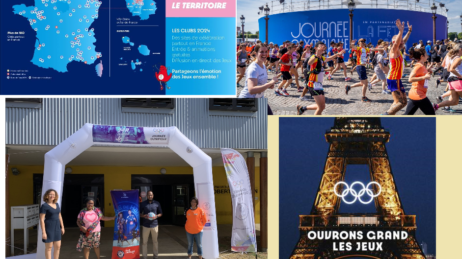
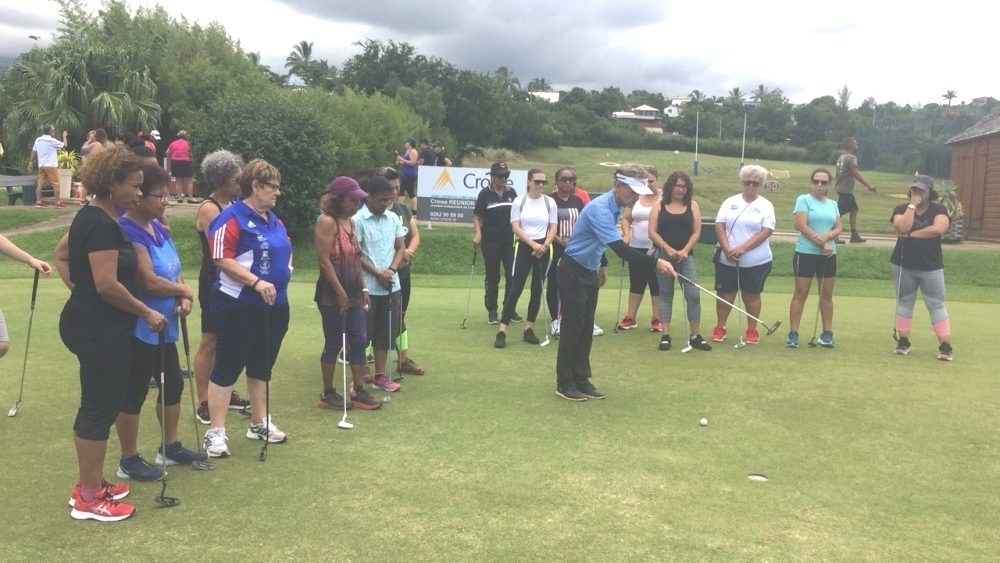

Voici les liens utiles :



Posté par : Andie THIEUMA le 30 Juillet 2024
Des manifestations diverses
et variées où on retrouvait des disciplines traditionnelles et des sports innovants.

Posté par : Henri BIENFAITEUR en date du 26 Juillet 2023
C’est dans le cadre du Label Terre de Jeux 2024 que le CROS et la ville du Tampon ont organisé la Caravane des Sports ce mercredi 26 juillet au Complexe sportif de Trois Mares.

Posté par : Pascale HONNEUR en date du 07 et 08 Aout 2022
Supportez-vous au féminin. Les participantes ont eu la chance de participer de nombreuses activités comme le zodiac, la pirogue et le tchoukball.